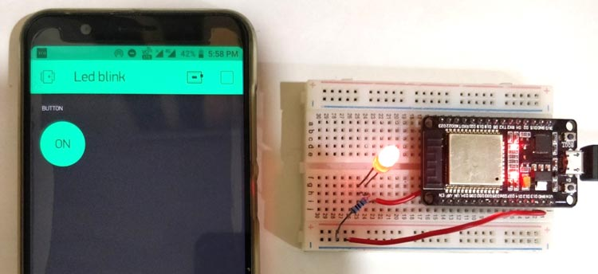

Course Overview
The Internet of Things is a multi-disciplinary subject.
In order to get a good grasp of Robotics, you need to understand:
- Electronics: how electrical circuits work
- Coding: the logic behind computer programs
- Product Design & UX: making effective user interfaces
Each of these disciplines normally requires years of university studies to master.
This is NOT a University level course.
We are going to get a taste of all of the above, but all of the theory and much of the engineering will be hidden inside black boxes like pre-packaged phone apps, already-customized cloud IoT servers, and software drivers and development kits.

If anything, the main discipline we will be studying and exercising is Systems Engineering, which looks at best practices for integrating various parts into a working system.
We will be taking a bunch of common electronic recipes and various building blocks of software and building them on top of each other to create a unique final product - an IoT Smart Device for your home or business!
So, get ready to design, connect, and code as we begin our journey into the world of the